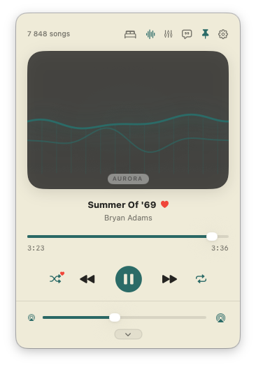
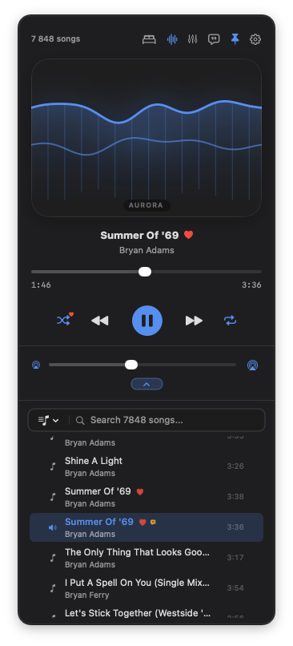
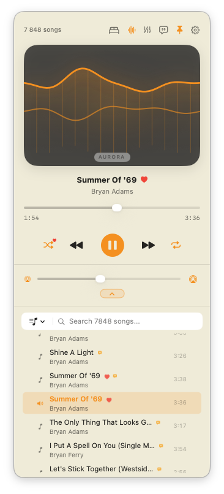
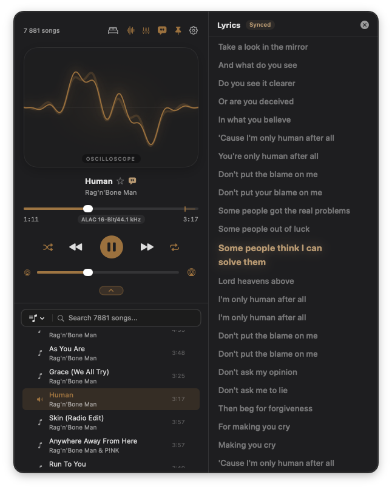
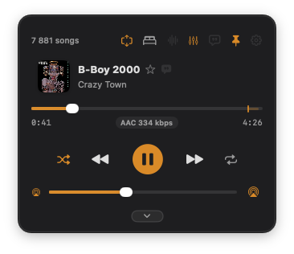
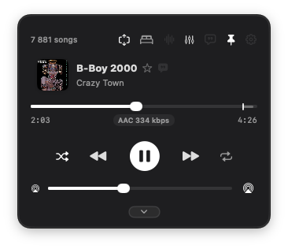
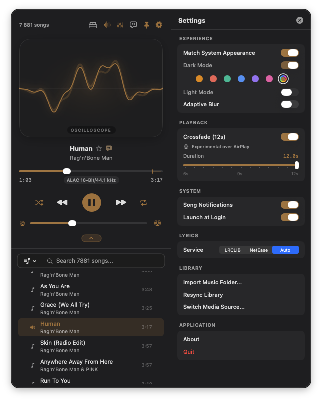

The elegant, featherweight audio player for your Mac.
Native Swift & AppKit performance. Plays your DRM-free Music library, Apple Podcasts, and folders with an audiophile 10-band equalizer, gapless crossfade, and live synced lyrics.


Full player with dynamic sound wave visualizers, album artwork, and quick drawer controls.


Native NSTableView library: instantaneous 120 FPS scrolling across 10,000+ songs.

10 octave-spaced peaking bands, accurate log curve, anti-clipping limiter, and 11 presets.

Karaoke-style synchronized lyrics powered by local .lrc files, embedded tags, and online APIs.



270 pt high streamlined view that tucks into your workflow without obstructing your screen.

Comprehensive settings: appearance, crossfade timings, audio ducking, output routing, and lyrics.
Crafted for macOS
Everything you want from a modern audio player.
No subscriptions. No cloud surveillance. Just your music files, beautifully rendered with native macOS speed.
Your Files, Any Format
Play FLAC, ALAC, AAC, MP3, AIFF, and WAV files. Includes a custom native FLAC metadata reader for instant vorbis comment parsing and cover art retrieval.
Audiophile 10-Band EQ
Octave-spaced peaking bands (32 Hz – 16 kHz) powered by an MTAudioProcessingTap. Features a dynamic peak limiter, soft clip guard, and hold-to-compare.
Loudness-Linear Crossfade
Seamless dual-player engine with smooth 6 to 12-second crossfades. Artwork crossfades in perfect sync with the audio track for an uninterrupted listening experience.
Synced Karaoke Lyrics
Real-time scrolling karaoke lyrics drawer. Readily displays time-synced lyrics from local .lrc files, embedded ID3 tags, or online sources (LRCLIB & NetEase).
Smart Artist Recognition
No more messy "Various Artists" tags. Echo extracts and sorts songs by their actual performer across compilations, soundtracks, and multi-artist releases.
Floating & Menu Bar Modes
Pin it to the status bar or detach into a floating desktop mini-player. Features magnetic edge springs, compact mode, and support for multi-monitor setups.
Studio Grade Acoustics
A precision 10-band EQ engineered for zero distortion.
Most software equalizers clip and distort when you boost frequencies. Echo's audio engine is built with an active, zero-latency peak limiter and transparent clip guard to maintain pristine audio dynamics even at high gain.
- ✓ 10 octave-spaced peaking bands (32 Hz – 16 kHz, ±12 dB)
- ✓ 11 built-in presets + custom preset creation
- ✓ Independent profiles for Music vs. Apple Podcasts
- ✓ Instant "Hold to Compare" original sound vs. equalization
- ✓ Full AirPlay 2 buffered and system streaming support
Engineering
Measured Resource Efficiency
Benchmarked on Apple Silicon (Mac mini M1). Pure native code with zero Electron overhead.
| Scenario | CPU Usage | Memory Footprint | Details |
|---|---|---|---|
| Playback on Mac | ~10% of 1 core (1.2% total) | ~45 MB | Standard audio folder or local album |
| Lossless AirPlay Streaming | ~20% of 1 core (2.5% total) | ~100 MB | Real-time local mixing for EQ & Crossfade |
| 8,000+ Track Music Library | 0.0% idle | ~77 MB | NSTableView virtual recycling (<15 rows allocated) |
| Jump to Playing Track | < 1 ms | 0 allocations | O(1) offset scroll calculation, zero frame drops |